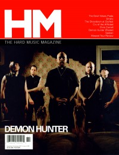

CMnexus
:
Contemporary Christian culture, music, and media.
Browse Magazines
Browse Profiles
cmnexus.org
CM
nexus
→
Profiles
→
L
→
Steven Douglas Losey
Steven Douglas Losey
Writing Credits: 1 of 1
< -- Previous
Next -- >
1
Writing credits listing
Aug 2001 in
CCM
24.2
By the Tree
-
Invade My Soul
Oct 2001 in
CCM
24.4
Sierra
-
The Journey
Nov 2001 in
CCM
24.5
Downhere
-
downhere
Dec 2001 in
CCM
24.6
various artists -
The Prayer of Jabez: Music, A Worship Experience
Jan 2002 in
HM
#93
The Juliana Theory
-
Music From Another Room
Mar 2002 in
HM
#94
Squad 5-0
-
Squad 5-0
May 2002 in
CCM
24.11
Jason Ingram Band
-
Jason Ingram
John Reuben
-
Hindsight
Oct 2002 in
CCM
25.4
"Real People. Real Worship."
MercyMe
Jan 2003 in
CCM
25.7
"Throwing Hollywood a 'Bone'"
T-Bone
Nov 2003 in
CCM
26.5
"If The Shoe Fits"
NewSong
Jun 2004 in
CCM
26.12
"Traveling Man"
Andrew Carlton
"Worship as a Lifestyle"
Joe Rogness
Sep 2004 in
Relevant
#10
Spotlight:
Pillar
Nov 2004 in
HM
#110
Sinai Beach
2005 in
Christian Guitarist & Bassist
#1
Interview:
Day of Fire
Interview:
Sanctus Real
Interview:
Skillet
Interview:
Third Day
May 2005 in
CCM
27.11
Mae
-
The Everglow
Jul 2005 in
HM
#114
Kids In The Way
Nov 2005 in
New Man
12.6
"Man of Steel And Velvet"
Tonéx
Dec 2005 in
CCM
28.6
"Subject To Change"
Project 86
May 2006 in
HM
#119
New Republic
May 2006 in
CCM
28.11
The Classic Crime
-
Albatross
Jul 2006 in
CCM
29.1
The Turning
-
Learning to Lose
Jan 2007 in
Ignite Your Faith
65.6
"Is God Like My Dad?"
Billy Buchanan
Sep 2007 in
HM
#127
Thousand Foot Krutch

Nov 2007 in
HM
#128
"Opening Up The Fiery Gates"
Demon Hunter
"Will The Circle Be UnSpoken"
Spoken
Jan 2008 in
Ignite Your Faith
66.6
"I Want to Bring Hope"
Britt Nicole
Mar 2008 in
HM
#130
"Flight Attendants"
Fireflight
Sep 2008 in
HM
#133
Superchick
Writing Credits: 1 of 1
< -- Previous
Next -- >
1
CMnexus
(noun)
The magazine index
of modern music
and Christianity
© 2011 CMnexus. Last updated September 2019.
Contact:
Rants and other correspondence to:
editor -AT- cmnexus
-DØT- org
About